Main Features of C Language:
1. C language is a middle level language; it supports the features of
low level and high level languages.
2. C language is helpful to
develop low level application that interacts with system hardware such
as device drivers, firmware's, operating system etc and high level
applications (user level).
3. C language supports modular
programming style, by using this style you can divide your program
(problem) into small pieces and integrating them, you can build a
complete program.
4. C language follows top to down programming
approach.
5. C is a general purpose language i.e. it can be used
for any type of programming solution. It has high level constructs,
which gives users the programming efficiency It has a rich set of
built-in functions and operators that can be used to write any_complex
program.
6. Program written in C are efficient and fast due to
its variety of data types and_powerful operators.
7. C is highly
portable i.e. C program written for one computer can be run on another
computer with little or no modification.
The integer Available numbers are Positive, Negative and Zero Maximum limit is 4 byte (32 bits) can be printed as %d
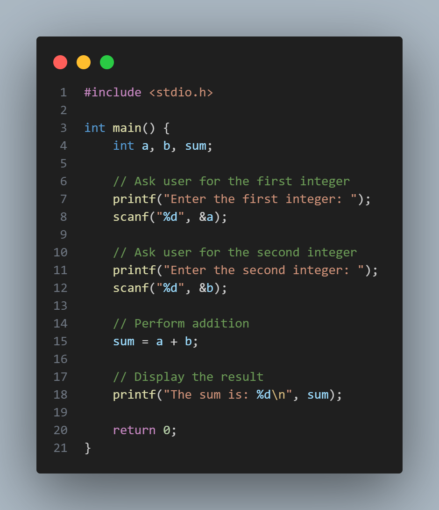
1. The program has started.
2. Declared 3 variable, two to send input and other one to get the output.
3. Printf() shows us the required inputs
4. The sum variable shows the output of a+b.
The Float It can print decimal numbers. Maximum limit is 4 byte (32 bit) can be printed as %f
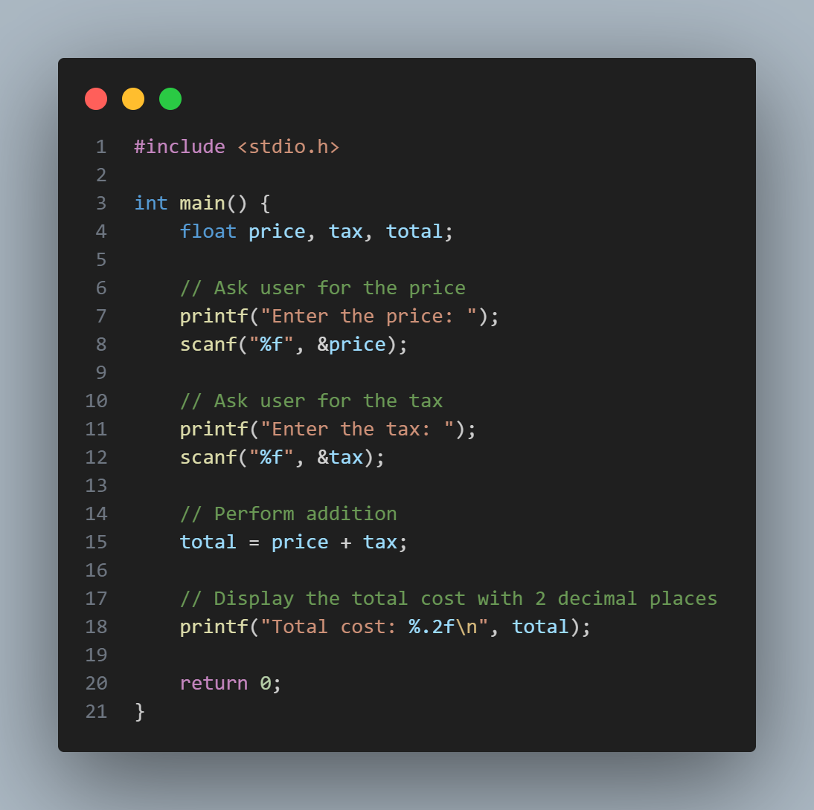
1. The program has started.
2. We took 3 variable, two for input and one for outpur.
3. Printf() shows us the required variables for the code
4. Because of the float, the program also shows us the decimal points in the output.
The Double can print 4 byte and double can increase it to 8 byte can be printed as %lf or %ld
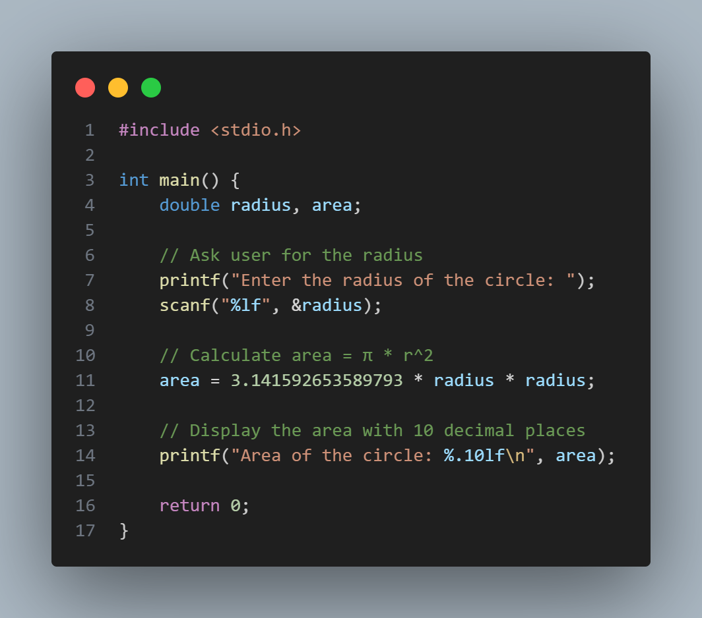
1. The program has started.
2. We took 3 variable, two for input and one for outpur.
3. Printf() shows us the required variables for the code
4. Because of the double, the program shows us the decimal points more than usual in the output.
The Character it is used to store single character like 'A', 'B', 'C', 'D' it can only take 1 byte need to be used in '' sign can be printed as %c
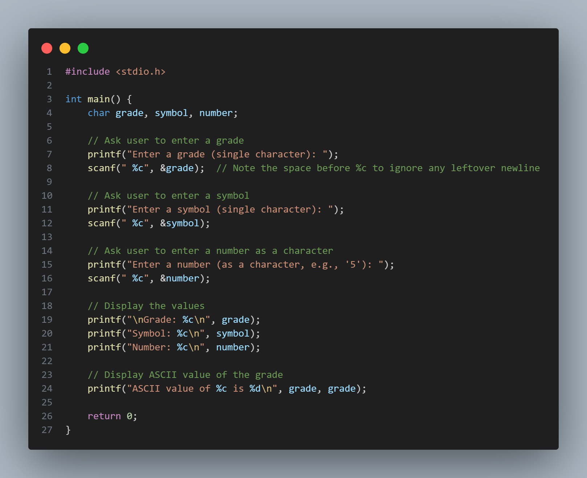
1. The program has started.
2. We took 3 variable, a grade, a symbol and a number.
3. Printf() shows us the required variables for the code
4. The ASCII value of the grade variable is shown in the output.
The Short it is used to print short integer instead of normal integer number it shows 2 bytes instead of 4 bytes. it is defined by %lu
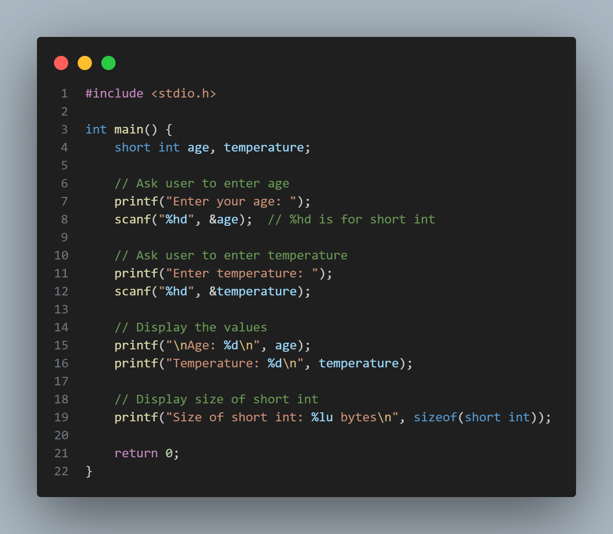
1. The program has started.
2. We took 2 variable.
3. Printf() shows us the required variables for the code
4. Because of the short, the program also shows us the less points in the output.
The long can print decimal numbers. Maximum limit is 4 byte (32 bit) can be printed as %f
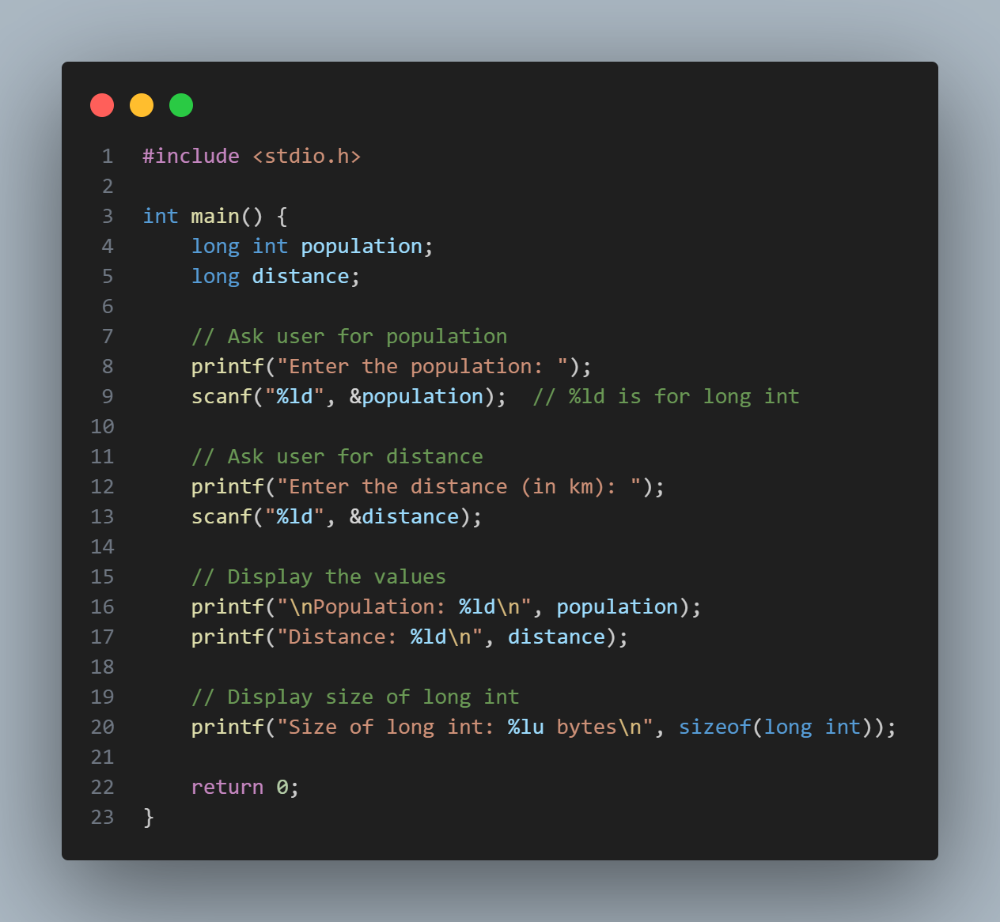
1. The program has started.
2. We took 2 variable, one for Population and the other one for distance.
3. Printf() shows us the required variables for the code
4. Because of the long, the program shows us the long points of the distance.
5. the size of population and distance is shown in the output.
The Void It is a special data type that represents no value It is used to master c language skill
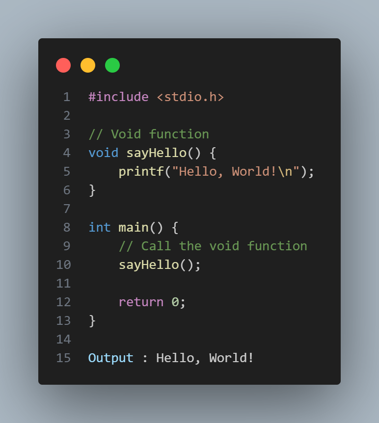
1. The program has started.
2. We printed Hello world by a sub function called sayhello in the void function. We can use any kind of word to call this function
3. The hello world is printed in the compiler but it went to void because of the void function
4. Then we called the sayhello function by an int main function. thats why the compiler shows the output.
The if...else it is to ensure that if the condition meets than it should be executed
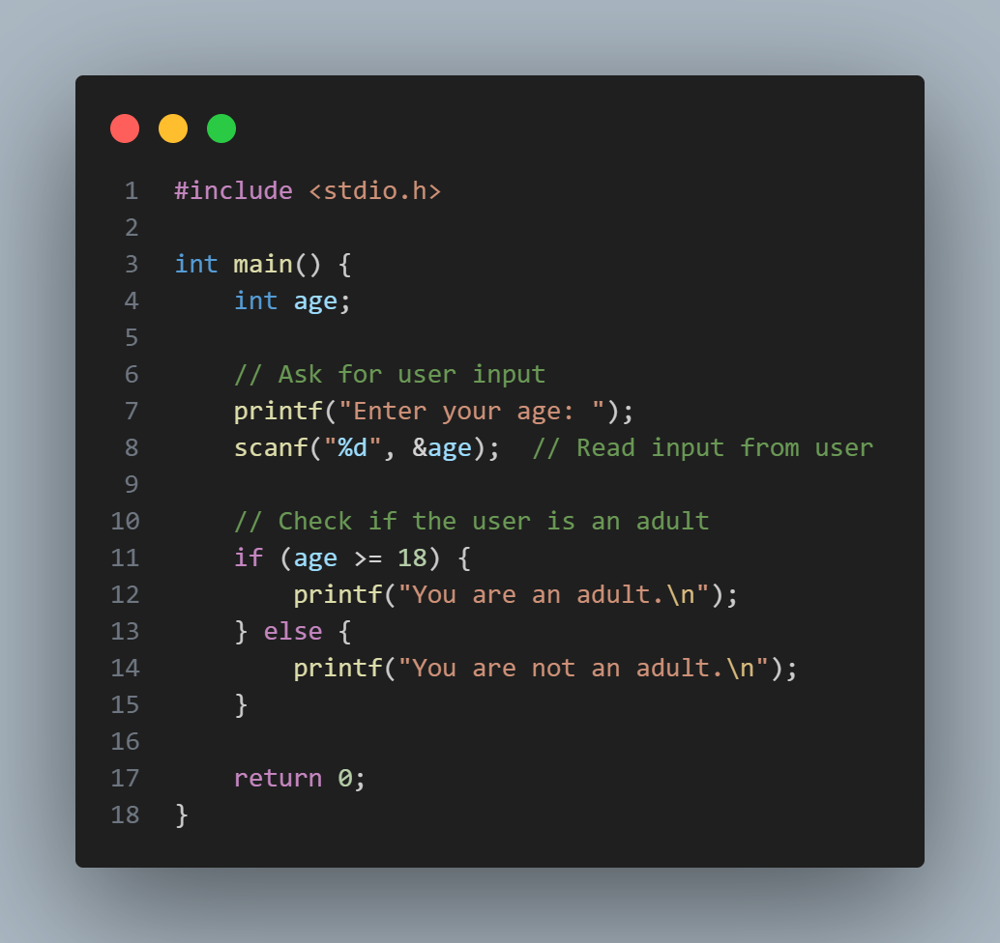
1. The program has started.
2. Asks for the input Age.
3. The if condition checks if the input is greater then 18 or not
4. If the input number of age is greater than 18 than it lets you enter the loop and prints what you told to print in the print function.
5. If the input number is less than the 18, the program does not get inside the if loop and skips it. then it goes to the else and prints what is printed in the printf function.
These three thing switch, case, default are used to detect one output from multiple outputs
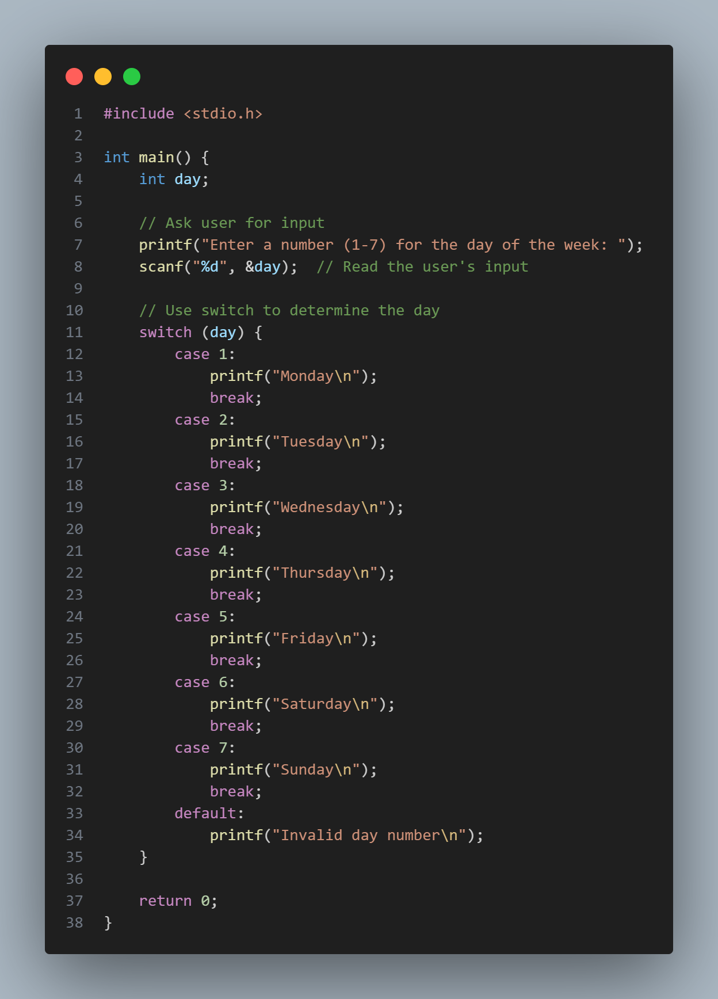
1. The program has started.
2.It asks for a date of the week.
3. The compiler stores the number in the day variable
4. The switch case checks for the input number and matches it with the cases given in the code.
5. If the input number is matched with any case, it prints the required output.
6. If the input number does not match with any case, it goes to default and prints Invalid day number.
The for increment used to make sure the code runs for a special character
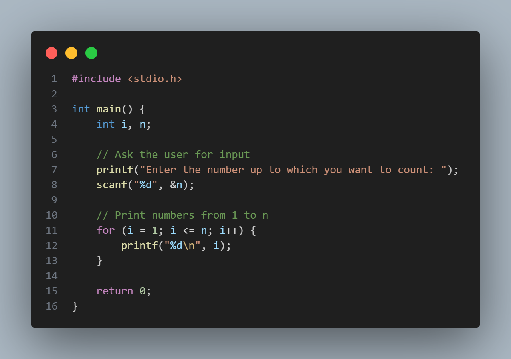
1. The program has started.
2. It asks to us to how much number we want to count.
3. There are 3 part in the for loop, for (i = 1 ; i <= n ; i++)
4. (i = 1) means the value of i started from 1. if we make it two than it will start from counting 2.
5. (i <= n) means the loop will run until the value of i is less than or equal to n. if we make it (i < n) than it will run until the value of i is less than n.
6. (i++) means the value of i will increase by 1 after each iteration. if we make it (i+=2) than the value of i will increase by 2 after each iteration.
The do...while it executes the code for at least a single amount of time before checking the condition
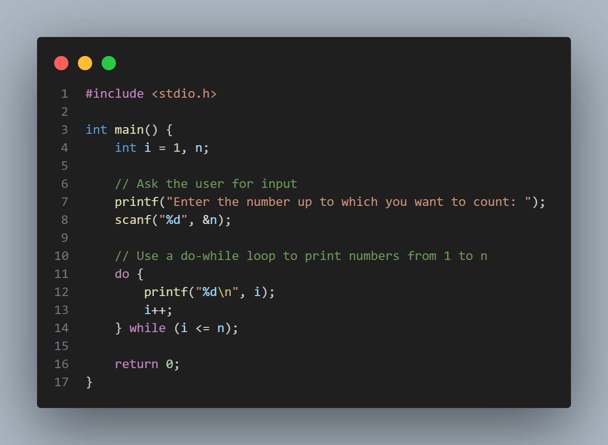
1. The program has started.
2. It asks to us to how much number we want to count.
3. The do...while loop first executes the code inside the do block, printing the value of i and incrementing it by 1.
4. After executing the do block, it checks the condition in the while statement (i <= n). If the condition is true, it repeats the process; if false, it exits the loop.
5. This ensures that the code inside the do block is executed at least once, even if the condition is false from the beginning.
The goto statement jumps from one part of the program to the other part of the program.
1. The program has started.
2. It first prints "Start" to indicate the beginning of the program.
3. The goto statement is used to jump to the label skip, skipping the line that would print "This line will be skipped."
4. The program then continues execution at the skip label, printing "You jumped here!"
5. Finally, the program returns 0 to indicate successful completion.